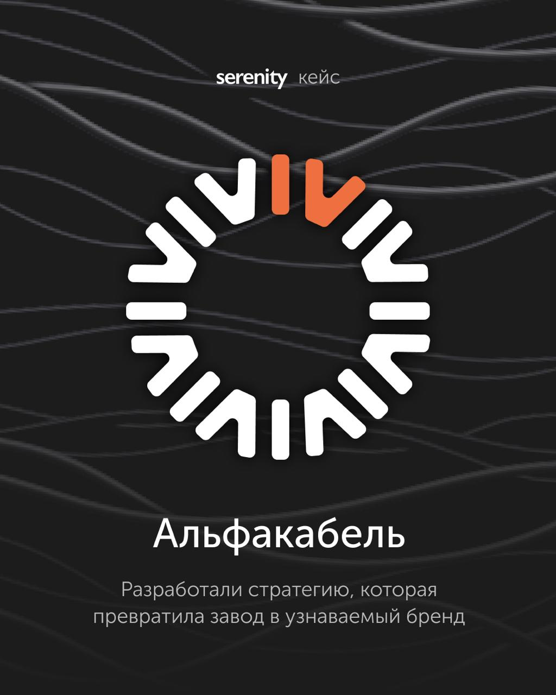

Это интересный пример: сложный B2B‑продукт, много конкурентов. Мы собрали в одной стратегии все, что важно для выбора — от позиционирования до воронки.

23 января 2026
Это интересный пример: сложный B2B‑продукт, много конкурентов. Мы собрали в одной стратегии все, что важно для выбора — от позиционирования до воронки.
